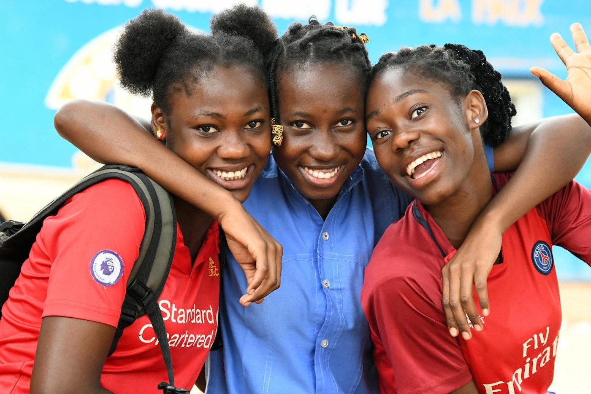

Our Programs & Impact
Rescue, Education Support, Essential Support & Business skills and kit Support
- Rescue and educate vulnerable children.
- Provide business skills in partnership with organizations.
- Distribute essential items for children in schools and the community (target: childen in school/community outreach).
- Offer life skills training to empower 1,000 youth/women annually through mentorship programs.
- Youth employment and entrepreneurship training.
- Distribute essetial items such as food stuffs, clothes to vulnerable families in the community in partnership with organizations and institutions.
- Provide hot meals to vulnerable children in the community.
- Support childen and youths returning to school (primary, secondary and tertiary).
- Support children of vulnerable families with uniforms and school fees.
- Run a school and a rescue center.
Establishment of Learning Institutions & Rescue Centers
- ECDE & primary school for vulnerable children in the community.
- Pre-school centers for vulnerable children.
- Rescue centers for vulnerable children.
- Training centers for vulnerable youths women/youth.
Advocacy for Rights & Inclusion of children, Youths and women
- Promote the rights of children, young people, women and ensure their inclusion in community development programs and decision-making.
Impact Highlights
- Rescued and enrolled over 20+ children in school, with their fees paid and essential school items provided.
- Over 50 youths reached with mentorship support.
- Over 20 women trained in business skills; 5+ received business statup kits.
- Helped youth and women in creating small businesses through the business kits.